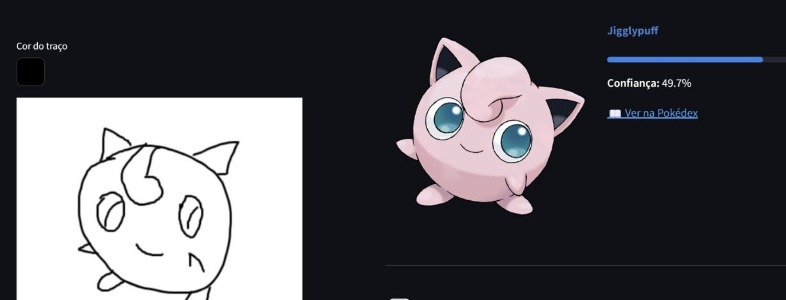
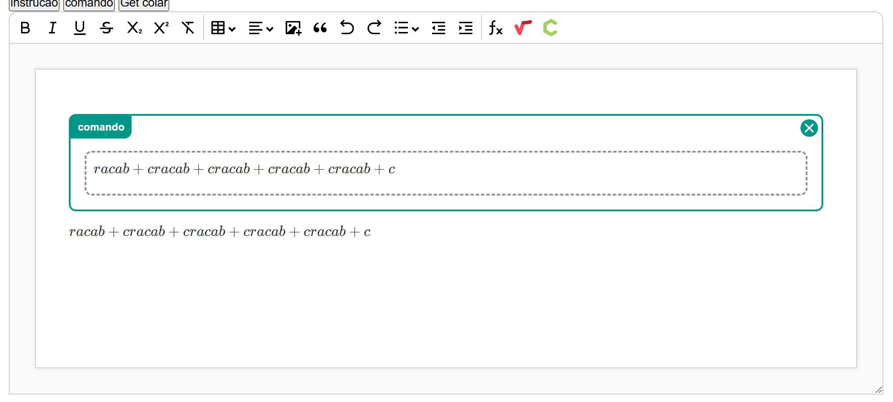

Desenvolvedor Full Stack graduado em Ciência da Computação, com experiência prática na coordenação de projetos e liderança técnica. Sólida atuação com Java (Spring Boot), Go (Golang) e Angular/TypeScript, focada na criação de plataformas web escaláveis. Expertise na integração de soluções de Inteligência Artificial (OCR, TTS, Visão Computacional) para automação de processos. Profissional com inglês avançado, orientado a metodologias ágeis e inovação tecnológica.
- Liderança Técnica: Atuação na coordenação de projetos estratégicos, definindo arquitetura de software e apoiando a equipe no ciclo de desenvolvimento ágil (Scrum).
- Engenharia de Software: Desenvolvimento ponta a ponta das principais plataformas educacionais, utilizando Java (Spring Boot) para microsserviços robustos e Angular para interfaces dinâmicas.
- Inovação & IA: Implementação de microsserviços com Go (Golang) e Python, integrando OCR, TTS e ICR para automatizar a geração de materiais de estudo e correções.
- Ferramentas Customizadas: Criação de biblioteca de edição de texto proprietária (baseada em Tiptap/TypeScript) e microsserviços JS para layouts automáticos.
- Colaborou ativamente no desenvolvimento da plataforma institucional, implementando novas features no front-end com Angular/TypeScript e SCSS.
- Atuou na manutenção e evolução do back-end em Java, garantindo a integridade dos dados e otimização de consultas no PostgreSQL.
- Participou de metodologias ágeis, contribuindo para a entrega contínua de funcionalidades focadas em automação acadêmica.

Poke-draw
Tiptap-Exitus- Machine Learning e Data Science com Python de A a Z (Udemy)
- Desenvolvedor Go (Golang) – Do Zero ao Avançado 2025 (Udemy)
- Understanding TypeScript & JavaScript/TypeScript Avançado (Udemy)
- Java + Spring Boot (Udemy)
Full Stack Developer graduated in Computer Science, with practical experience in project coordination and technical leadership. Solid experience with Java (Spring Boot), Go (Golang), and Angular/TypeScript, focused on creating scalable web platforms. Expertise in integrating Artificial Intelligence solutions (OCR, TTS, Computer Vision) for process automation. Professional with advanced English, oriented to agile methodologies and technological innovation.
- Technical Leadership: Acted in the coordination of strategic projects, defining software architecture and supporting the team in the agile development cycle (Scrum).
- Software Engineering: End-to-end development of the institution's main educational platforms, using Java (Spring Boot) for robust microservices and Angular for dynamic interfaces.
- Innovation & AI: Implemented microservices with Go (Golang) and Python, integrating OCR, TTS, and ICR services to automate the generation of study materials and corrections.
- Custom Tools: Created a proprietary text editing library (based on Tiptap/TypeScript) and JavaScript microservices for automatic test layout generation.
- Actively collaborated in the development of the institutional platform, implementing new features on the front-end with Angular/TypeScript and SCSS.
- Worked on the maintenance and evolution of the back-end in Java, ensuring data integrity and query optimization in PostgreSQL.
- Participated in agile methodologies, contributing to the continuous delivery of functionalities focused on academic automation.
- Machine Learning and Data Science with Python from A to Z (Udemy)
- Go (Golang) Developer – From Zero to Advanced 2025 (Udemy)
- Understanding TypeScript & Advanced JS/TS (Udemy)
- Java + Spring Boot (Udemy)